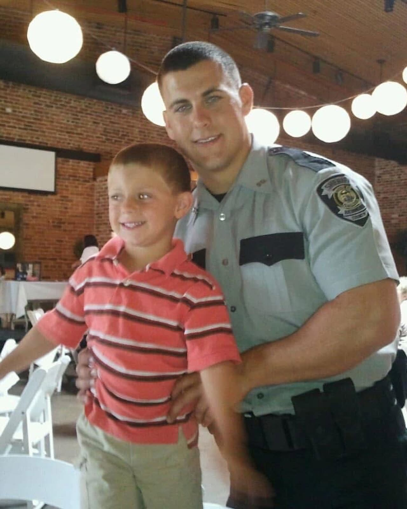
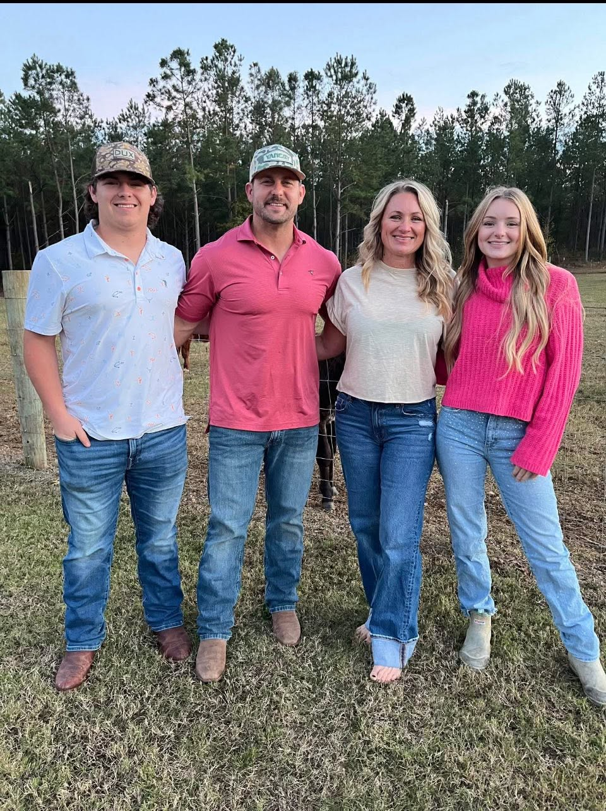
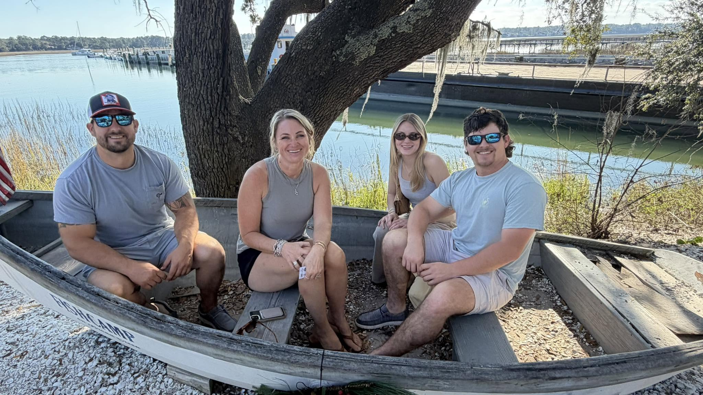
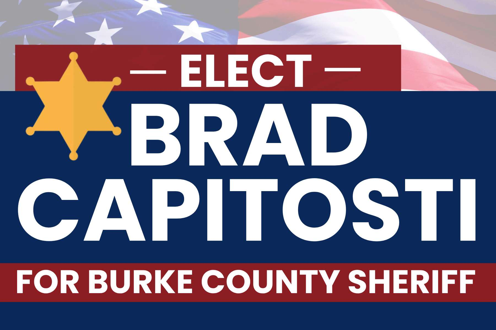
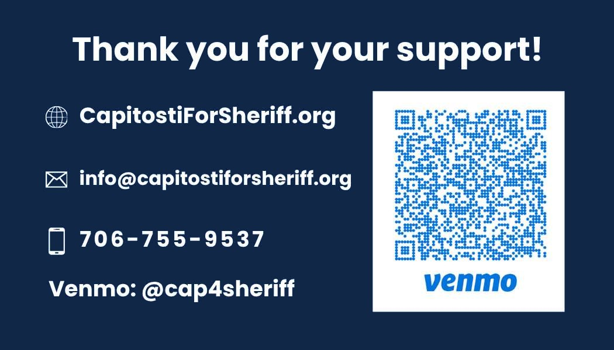

Rebuild Trust
Restore confidence in the BCSO through transparency, communication, accessibility, and leadership residents can reach.
The People's Sheriff
Brad is running to serve Burke County with practical law enforcement experience, steady leadership, and a commitment to listening to the people he protects.

Home Page
Brad Capitosti, known to many as Cap, is a CSRA native, husband, father, and law enforcement professional who believes the sheriff's office should be visible, accountable, and connected to every community it serves.
His background includes patrol, field operations, special operations, SWAT, gang investigations, narcotics enforcement, and undercover work with federal partners. Brad is bringing that experience home to Burke County with a clear promise: protect families, stand with deputies, and serve residents with fairness and strength.
Platform
Brad's vision is to create a safe environment where tradition and progress go hand in hand. He will uphold the values that make Burke County great while working to keep neighborhoods secure, schools protected, and the sheriff's office approachable, transparent, and responsive.

Restore confidence in the BCSO through transparency, communication, accessibility, and leadership residents can reach.
Build strong relationships through regular presence in neighborhoods, schools, churches, civic groups, and local events.
Eliminate wasteful spending and ensure taxpayer dollars are used wisely to support public safety.
Confront the rise in local gang activity with experience, investigation, prevention, and partnerships.
Increase safety in Burke County schools so students, teachers, staff, and families can feel protected.
Strengthen officer retention and morale by supporting deputies, improving culture, and leading from within.
A stronger sheriff's office starts from within and extends into the community. Together, we will build a safer, more united Burke County.
Get Involved
Campaigns are built one conversation at a time. Volunteer, request a yard sign, host a neighborhood conversation, or ask how to help Brad reach voters across Burke County.
Events
This page gives the campaign a place to publish upcoming meet-and-greets, community stops, volunteer days, and voter outreach events.
Upcoming
Location and time to be announced. Invite neighbors who want to talk directly with Brad about public safety in Burke County.
Upcoming
Help distribute signs, organize materials, and prepare outreach for neighborhoods across the county.
Stay Connected
Follow the campaign on Facebook or email the team for the latest event schedule.





The People's Sheriff
The campaign will keep public-facing information current as forms, disclaimers, donation instructions, and official campaign graphics are finalized.
Paid for by Brad Capitosti for Sheriff.
For official contribution details, reporting requirements, or campaign-use graphics, contact the campaign before printing, publishing, or placing paid materials.
Donate
Scan the QR code or send support by Venmo to @cap4sheriff. Direct online contributions can be added once the campaign selects a payment processor and reporting workflow.
info@capitostiforsheriff.org
Contributions are not deductible as charitable contributions for federal income tax purposes.
Georgia law requires political committees to report the name, mailing address, occupation, and employer for each individual whose contributions aggregate more than $100 in a calendar year.
By providing your phone number, you agree to receive SMS marketing messages, including donation solicitations, from The Committee to Elect Brad Capitosti for Burke County Sheriff. Message frequency may vary. Message and data rates may apply. Reply STOP to opt out or HELP for help. Consent is not a condition of purchase.
Paid for by Brad Capitosti for Sheriff. The People's Sheriff. For campaign questions, volunteer information, contribution reporting details, or campaign-use graphics, contact info@capitostiforsheriff.org.